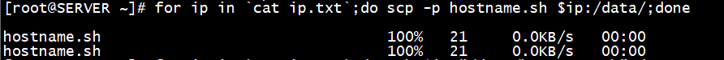
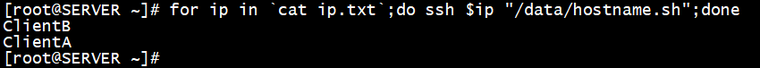
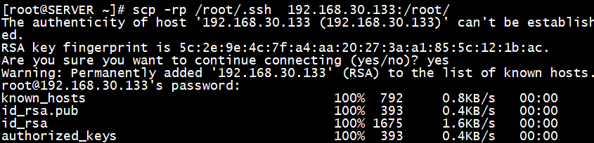
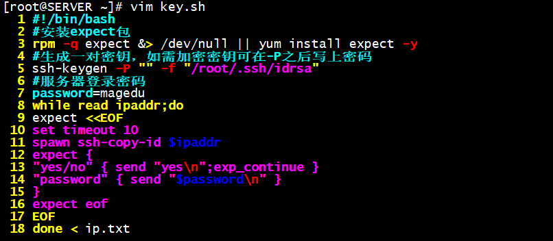
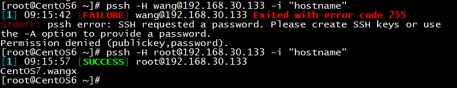
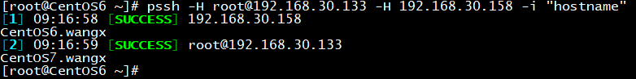
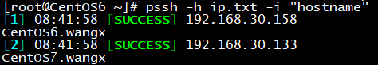

一、SSH协议相关概念
SSH：secure shell，protocal，22/tcp，安全的远程登录；
利用 SSH 协议可以有效防止远程管理过程中的信息泄露问题，用来代替早期不安全的telnet
具体的软件实现：
OpenSSH：ssh协议的开源实现。CentOS默认安装
dropbear：另一个开源实现
SSH协议版本：
v1: 基于CRC-32做MAC，不安全；man-in-middle
v2：双方主机协议选择安全的MAC方式
基于DH算法做密钥交换，基于RSA或DSA实现身份认证
相关包：
openssh
openssh-clients
openssh-server
工具：
基于C/S结构：
Client：
Linux：ssh，scp，sftp，slogin
Windows：xshell，putty，securecrt，sshsecureshellclient
Server：sshd
客户端组件：
ssh, 配置文件：/etc/ssh/ssh_config
Host PATTERN
StrictHostKeyChecking no 首次登录不显示检查提示
格式：
ssh [user@]host [COMMAND]
ssh [-l user] host [COMMAND]
-p port 远程服务器监听的端口
-b 指定连接的源IP
-v 调试模式
-C 压缩方式
-X 支持x11转发，跨网络的图形界面显示；例如：xclock
-Y 支持信任x11转发
ForwardX11Trusted yes
-t 强制伪tty分配；堡垒机可用
ssh -t remoteserver1 ssh remoteserver2
两种方式的用户登录认证：
基于password：
只要你知道自己帐号和口令，就可以登录到远程主机。所有传输的数据都会被加密，但是不能保证你正在连接的服务器就是你想连接的服务器。可能会有别的服务器在冒充真正的服务器，也就是受到“中间人”这种方式的攻击。
大致流程：
1.客户端发起ssh请求，服务器会把自己的公钥发送给用户
2.用户会根据服务器发来的公钥对密码进行加密
3.加密后的信息回传给服务器，服务器用自己的私钥解密，如果密码正确，则用户登录成功
基于key：
需要依靠密匙，也就是你必须为自己创建一对密匙，并把公用密匙放在需要访问的服务器上。如果你要连接到SSH服务器上，客户端软件就会向服务器发出请求，请求用你的密匙进行安全验证。服务器收到请求之后，先在该服务
器上你的主目录下寻找你的公用密匙，然后把它和你发送过来的公用密匙进行比较。如果两个密匙一致，服务器就用公用密匙加密“质询”（challenge）并把它发送给客户端软件。客户端软件收到“质询”之后就可以用你的
私人密匙解密再把它发送给服务器。
大致流程：
1.首先在客户端生成一对密钥
2.并将客户端的公钥ssh-copy-id拷贝到服务器端
3.当客户端再次发送一个连接请求，包括ip、用户名
4.服务端得到客户端的请求后，会到authorized_keys中查找，如果有响应的IP和用户，服务器就会发出“质询”（challenge）表现为一串随机字符，如：acdf。
5.服务端将使用客户端拷贝过来的公钥对“质询”进行加密，然后发送给客户端
6.得到服务端发来“质询”后，客户端会使用私钥进行解密，然后将解密后的字符串发送给服务端
7.服务端接受到客户端发来的字符串后，跟之前的字符串进行对比，如果一致，就允许免密码登录
两种登录认证的对比：
基于key的认证方式，用户必须指定自己密钥的口令。但是，与第一种级别相比，第二种级别不需要在网络上传送口令。
第二种级别不仅加密所有传送的数据，而且“中间人”这种攻击方式也是不可能的（因为他没有你的私人密匙）。但是整个登录的过程会比基于passwd认证稍长，可能需要10秒
相关文件：
~/.ssh/authorized_keys 存放已授权基于key登录的主机的公钥
~/.ssh/know_hosts 存放本机SSH连接过的主机的公钥
操作：加快ssh服务访问速度
/etc/ssh/sshd_config文件
GSSAPIAuthentication yes–>no 关闭api验证
#UseDNS yes|no–>UseDNS no 去掉注释，启用DNS
重启sshd服务
CentOS6：
service sshd restart
CentOS7：
systemctl restart sshd
二、实验：实现基于key登录认证
一、在客户端生成一对钥匙：
ssh-keygen -t rsa
交互式输入：
默认路径
输入口令
二、发送公钥给服务器端：
ssh-copy-id wang@192.168.30.7
再次连接：
ssh wang@192.168.30.7 不提示输入密码
ssh wang@192.168.30.7 ‘id’ 远程执行命令
利用基于key不需输入口令登录的特性，我们可小批量的执行一些任务：
先把需要执行任务的服务器IP放入一个文件中：
cat ip.txt
192.168.30.7
192.168.30.12
192.168.30.17
……
编写一个脚本显示主机名：
vim hostname.sh
hostname
chmod +x hostname.sh
执行命令：
批量传送脚本
for ip in cat ip.txt;do scp -p f1.sh $ip:/data/;done

批量执行脚本显示主机名
for ip in cat ip.txt;do ssh $ip “/data/f1.sh”;done

可结合expect实现批量密钥登录方式
三、实验：实现多台机器间互相基于key登录认证
思路：多台机器公用一套钥匙
一、在A机器上生成一对密钥，并对自己执行ssh-copy-id命令
ssh-keygen
ssh-copy-id A
二、将本机.ssh目录发送给其他所有机器
scp -rp /root/.ssh B:/root/
scp -rp /root/.ssh C:/root/

即可实现多台机器间互相基于key登录
当然，如果我们觉得私钥不加密不安全，我们还可以给私钥重新加密
重设私钥口令：
ssh-keygen -p
私钥加密后，每次连接都要求输入私钥口令，我们可采取代理托管方式省去输入口令这一环节：
注：代理托管重启后失效，需重新设置
启用代理托管口令
ssh-agent bash
ssh-add
四、实验：实现100台机器基于key登录验证
一、准备ip列表
先把需要执行任务的服务器IP放入一个文件中：
cat ip.txt
192.168.30.x
192.168.30.xx
192.168.30.xxx
……
二、编写将公钥推送到其他100台机器上的脚本
#!/bin/bash
#安装expect包
rpm -q expect &> /dev/null || yum install expect -y
#生成一对密钥，如需加密密钥可在-P之后写上密码
ssh-keygen -P “” -f “/root/.ssh/id_rsa”
#服务器登录密码
password=centos
while read ipaddr;do
expect <<EOF
set timeout 10
spawn ssh-copy-id $ipaddr
expect {
“yes/no” { send “yes\n”;exp_continue }
“password” { send “$password\n” }
}
expect eof
EOF
done < ip.txt

三、运行脚本，将公钥推送到其他100台机器上
四、实现基于密钥验证无密码登录
五、利用pssh工具实现集群管理
注：系统默认未安装pssh工具，需使用epel源安装，使用pssh需先建立服务器端到用户端的基于
key验证才可以正常使用
pssh工具：
pssh是一个python编写可在多台服务器上执行命令的工具，也可实现文件复制
options：
–version 查看版本
-h 指定主机文件列表，内容格式”[user@]host[:port]”
-H 指定主机，内容格式”[user@]host[:port]”
-l 登录使用的用户名
-p 并发的线程数[可选]
-o 输出的文件目录[可选]
-e 错误输入文件[可选]
-t TIMEOUT超过时间设置。0代表无限制[可选]
-O SSH的选项
-v 查看过程
-A 手动输入密码模式
-x 额外的命令行参数使用空白符号，引号，反斜线处理
-X 额外的命令行参数，单个参数模式，同-x
-i 显示每个服务器执行结果输出信息，默认不显示
-P 打印出服务器返回信息
未建立基于key验证将显示[FAILURE]失败
已建立基于key验证将显示[SUCCESS]成功

远程连接某主机执行hostname，显示主机名
pssh -H USER@192.168.x.x -i “hostname”

批量远程执行命令
一、将需要连接的主机写入一个文件
cat ip.txt
192.168.30.x
192.168.30.xx
192.168.30.xxx
……
二、批量显示文件中包含的主机名
pssh -h ip.txt -i “hostname”
